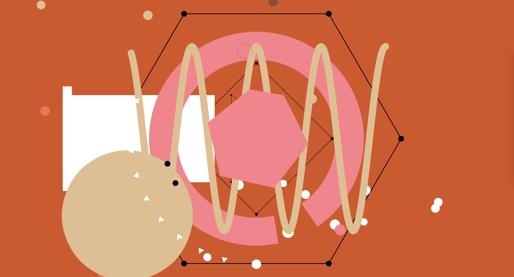

Week One.
Trying to apply the word over multiple applications is proving to be difficult. Talking to the class about my initial ideas and being able to hear other people’s ideas for their words have inspired me. For the 2d application, I initially wanted to create a series of overlapping transparent pages that explain the word. The overlapping will visually show the unintelligible confusing mass of text, but peeling away the pages will allow the viewers to understand the definition. This is fine, but it’s a more traditional way to execute this idea. I heard ideas from other people where they translate their word into a form of a game. This made me think about creating a word search game to the 2D application. A word search, at its core, is a page of unintelligible words and letters. One would have to go through the game to find the words they’re looking for. I could create a word search game where the user would have to slide a card and it would reveal the definitions.
Week Two.
I was experimenting with the word search idea. I’ve done this by filling out a letter-sized page with randomized letters and inserting a definition of Babeldom into it. I printed out this page and created a die-cut where the definition is. I printed a second page only with the definition and placed it behind the die-cut. Although this idea was interesting, I felt it didn’t display the full meaning of the word. I formed a new idea by looking at a work called The Five Books by Hrytsko Chubay.
Chubay cut strips of paper that contained handwritten or typewritten text. He would use these strips of paper to create nests, shapes, or frames for other text. I was more interested in the nests, as it most displayed the idea of Babeldom. This was the concept I wanted to pursue for the 2d application. In terms of my previous idea of using the transparent paper (actually i’ve been thinking of acetate sheets, not transparent paper), I’m now thinking of applying this material onto this reflective design process document. Because of all the text I’m writing, I think it would be very interesting to see it layered upon each other.
Week Three.
The Chubay idea isn’t working out well. But now as I write this before critique, I want to take cut out pieces of words and create a composition. But from what I’m seeing, I need it to be LESS literal. I need the conversation to drive in a way that will take the concept and result to something that will be completely not literal.
IDEAS FROM CRITIQUE:
- Red and blue 3d glasses to reveal words and definitions.
- Visualize the thinking process. Brain storm. Mind Map. Take the way the brain moves 1000000x a minute and stop it, in order for us to see the process.
- Record voices and sounds of languages mixed together from public places; Communication and miscommunication, different sounds from different sources; not just people talking, but also animal noises, automobiles, trees, etc.
- Create an experience where the viewer is bombarded with TONNES OF NOISE and words will appear to help the viewer focus in on the sound that is associated with that word.
- Create a collage of unintelligible images and the user can push/pull a tab that will isolate the image from the rest of the collage.
Anyways lol that was a sh*t show but hey! I'm positive there's more good things to come next week.
These were sketches of the interesting ideas I got from that critique.
Week Four.
After last week’s debacle, I have come back with interesting, and more importantly, WORKABLE set of concepts. For 2D, I thought of creating an anamorphic illusion where objects will hang off the ceiling and the viewer will have to change their angles/perspective to make sense of the jumbled up/broken apart words. I figured the word should be Babeldom. For 3D, I was thinking of creating a ViewMaster toy that the viewer will look into and twist a set of cogs to rearrange broken up words. For the rest, well, they’re a mess...but it's work in progress. After receiving feedback from small group discussions, I realized I needed to rearrange my ideas. Right now my “2D” piece is apparently very 3D, and my 3D piece can do without the ViewMaster and become 2D.

Week Five.
Found out that the 2D piece has to be refined/done for next class, and that we’re supposed to create mockup for our 3D piece. Panic. Not too much though... Little panic. I presented my refined ideas for the 2D piece. After rearranging my ideas from last week, I finally got a concept locked for 2D. Basically, I deconstructed the alphabet's letterforms and used that to build Babeldom’s definition: "a confused mix of voices, languages, or words and ideas.” I took these deconstructed words and placed it on a stack of three transparent cogs/shapes/paper. The goal is to twist the cogs until you find the right combination to reconstruct words. No new further development was needed this week for the 3D piece, it was only a matter of creating the physical mockup. In the idea board, I officially decided that the anamorphic illusion would be of the word Babeldom, as the whole point of the illusion is to break apart and confuse the subject. My ideas for the other pieces were further solidified this week… except maybe for 4D.
Week Six.
Wow week six. Halfway done the semester, and I realized I should’ve been more active with writing this weekly Reflective stuff. At this juncture, I created my 3D mockup and am waiting for my 2D refined mockup to be printed. I’ve been doing research on what I can do with my 4D piece. It started with sound; I looked for videos on YouTube about a chaotic cacophony of sounds. Found a few and posted it on my Tumblr. Then it was visuals. For a while, I didn’t know what the visuals would be, as to me, it would depend heavily on the audio. However, I had to start somewhere, beginning with those crazy “watch when you’re high” videos that feature trippy/psychedelic visuals. From there I went into a spiral of trying to search up a specific aesthetic I ONCE saw on TikTok. I literally spent an hour looking for this effect, or filter, or whatever it was. I finally found it in the end, it was called Google’s DeepDream. I thought it was the perfect aesthetic to convey confusion and chaos.
Presenting the 2D and 3D projects gave me a confidence boost with this entire class. I’m really glad that the 2D piece worked out really well, especially since it started out so horribly. When I presented my 3D piece, I got a suggestion on making my anamorphic illusion similar to Alexander Calder’s mobiles. Making my 3D piece look like Calder’s mobiles would better reflect with the word, as the person doesn’t have to look for one specific angle… Instead they can look at the whole piece and it would eventually click. I also got a suggestion where a deconstructed word is projected onto a wall and cogs are turned that will display the vertical lines of that word.
Week Seven.
Study Break. 4D is still difficult to think about. But I’m inspired. Because my 2D and 3D pieces are all about deconstructing words, what if I deconstruct language in the 4D piece. Instead of the difficult DeepDream idea, I can create a video where the audio is completely unintelligible because the words are deconstructed. Visuals? Could be a distortion of reality. An aspect of the word Babeldom deals with chaotic/confusing activity. The visuals could represent that while the audio can represent the deconstruction of language. Heck why not add in my deconstructed alphabet in there as well.
It’s the middle of reading week, and I’m supposed to present a 4D mockup in seven days. I have yet to start. I don’t know HOW to start.
Update: I’m watching a 10 Hour video of people talking… it’s perfect! I’m like... Kind inspired again. The video could abstractly recreate the experience of being in a crowd and not knowing what’s going on or where you’re going.
Week Eight.
First class back after the study break. I presented my 4D piece and received good feedback and suggestions!!!! I need to tweak some things in the video to make it better (but I think it’s really good haha... And people liked it!). Now, all I have to think about are the experimental and reflective pieces. For the experimental piece, I started coding a sketch on Processing. Basically it’s a simple sketch that randomizes all the characters in the UniCode system… Now that I’m thinking about it tho, it seems too simple… It needs to be like…. Experimental… and an experience… I could make an interactive sketch but I don’t know how to make it interact.
BIG BRAIN MOMENT: what if I create an interactive processing sketch where the audience can type to “”””talk””””" to an “”””AI””””” but the letter’s they see on screen isn’t the letters they type in. They can have a conversation that even the “””AI””” won’t understand.
ORRRR!!! The human participant CAN understand what they’re typing, but the AI will always respond in gibberish. The ai is an omniscient being that is ABLE to answer ALLLL of the universe’s questions….. except no one can understand it!
Week Nine.
I presented my “All-Knowing AI” idea, but I wasn’t that confident with it anymore. The work that I would put myself under was just: Not It. I wouldn’t have fun with it as I’d be too busy figuring out the technical aspect of coding. I explained this idea to my peers and got suggestions that can improve it. Still wasn’t confident with it. After talking to Paul, I picked out a concept that I think I want to go forward with. There is a web app called PATATAP and its premise is for the user to press any key on their keyboard for a musical and visual experience. I tested this web app with my peers and see if something like this would make sense for Babeldom. As the discussion went further, I figured I could use sounds from a human mouth. Pressing random keys will activate sounds and create a visual.
This is a screenshot from Patatap.
Week Ten.
The Babeldom experimental applet is a success!!!! I’ve managed to record a BUNCH of noises (courtesy of moi) and I’ve gotten a good chunk of the code down, especially the bottom row of letter keys (Z-X-C-V-B-N-M). I’ve done some research though and I found that processing sketches can no longer be exported online… There is another program plugin called p5.js. It’s supposed to achieve the same results as processing (I think it’s by the same creator lmao) I just wanna make sure that I can transfer over all my code in time so I can put it online and integrated with my reflective piece.
.jpg)
These images are taken from a later version of this Babeldom applet, which became "Babble".
Week Eleven.
CORONAVIRUSSS!!! CORONAVIRUUUSSSS!!!!! We’re truly living in uncertain times. With the news of school closures due to COVID-19, a problem arises with my 3D piece. I'm not allowed to go to OCAD's rapid prototyping centre to get acrylic slabs laser cut. That's not technically a problem as I can create my hanging mobile from home using other materials, but I probably wouldn't be as satisfied with the result. I could also create a mockup digitally? But that's not 3D, huh... I'll have to talk to Paul about this and see which direction I should go.
I thought of another problem! I wanted my 2D piece to be made out of clear acrylic, but I put off actually laser cutting it because of time constraints. THAT can't be achieved any other way unless I keep the mockup that I have right now.
Oof. Good news though, I fully refined the 4D piece. It's done and I can simply post it online (probably on VIMEO). In terms of Experimental, I just need to power through it, but otherwise, it's done. And finally, Reflective. I keep telling myself it will be easy, as I'm only making a website. But I should start getting on that. As I'm typing this, there's approximately four weeks and a day left to present everything.
EDIT: I started working on the Experimental piece again and another major issue appeared due to the school closures. My Experimental piece, an interactive program built on Processing, can only be successfully performed on my laptop. I've spent many lost hours trying to understand how to transfer the code onto Processing's web-oriented sibling, p5.js. It's not working out well. The language is not entirely the same and it's too difficult to transfer the complex code I've already built into the web. Anyway, I'm probably going to screen record the experience... which isn't ideal but it might work.
Week Twelve.
Just did online class. I think it was successful! Update on all the problems I brought up last week. Turns out, there aren’t any problems! For both 2D and 3D, I was able to create finalized mockups on Adobe Illustrator that looks three-dimensional and amazing. And because it was created for a digital space, I was able to push the design further.
Update on my experimental piece. My friend suggested putting my processing code onto a website called openprocessing. Basically, I don’t have to recode all of my experimental piece nor do I have to record the experience. Openprocessing allows me to put my code online and for others to see and experience it themselves.
Update on the reflective piece. The online class really liked it! It truly represented the word babeldom and it turned out a lot better than my original plan, which was to make a book.
Things are looking up for these projects and I’m excited to see them all come together.❤
Bonus: Week Thirteen.
Online class number 2. At this stage, we’re just showing process on whatever piece, and things are looking great for myself and everyone who presented online.
Update on experimental piece: I’m transferring my code to open processing. It’s slow but I’m getting the hang of it. I just hope that by next week it’ll work.
Update on my reflective piece: A couple of suggestions were made that I think were really interesting. Sound should definitely be utilized for the website. I’d need to find the right sound to display babeldom and create the right atmosphere.